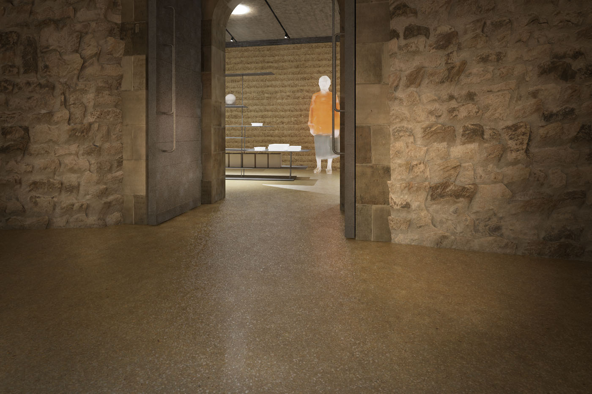
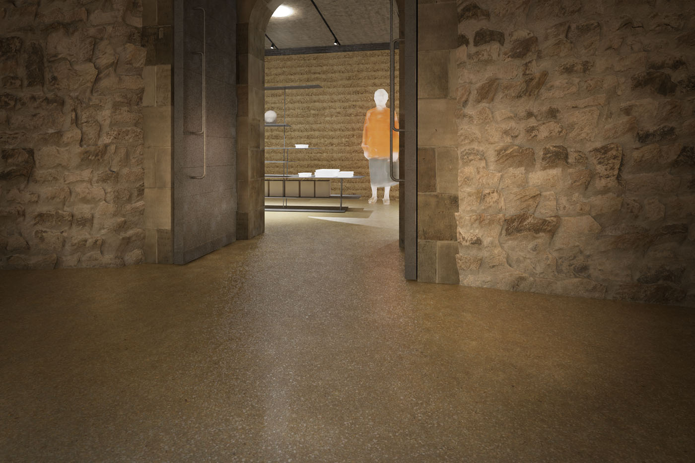

-
 



-


Rekonstrukce a přístavba kaple Všech Svatých s kostnicí
2018 - dosud
Zobrazit text
2018 - dosud
Zobrazit text
Rekonstrukce a přístavba kaple Všech Svatých s kostnicí
V rámci rozsáhlé, komplexní a náročné obnovy kostela Všech Svatých s kostnicí, která probíhá již od roku 2014, jsme byli jako architekti osloveni generálním projektantem Vítem Mlázovským, abychom se spolupodíleli na podobě přístavby obchodně-výstavních a skladovacích prostor, zkráceně na „bookshopu“.
V rámci bezpodmínečně nutných sanačních opatření vznikl po obvodu celé unikátní dvoupodlažní kaple rozsáhlý výkop, a zatímco v jeho útrobách probíhal archeologický průzkum, během něhož se našly stovky pohřbených lidí, začala se objevovat myšlenka, zda by nebylo možné tento nově vzniklý prostor nějakým způsobem využít. Využít a zároveň nezneužít potenciál. Tedy odlehčit stavbě samotné, která je pod náporem návštěvníků na pokraji své kapacity a zároveň kvůli tomu zákonitě trpí ztrátou autentičnosti a piety. Sakrální prostor se desakralizuje a vzdaluje svému původnímu účelu. Smyslem této unikátní stavby bylo, aby si člověk v temném polozapuštěném karneru s monumentálním ossariem v podobě obrovských kosterních pyramid uvědomil svoji konečnost. Kromě své konečnosti by měl ale návštěvník v horní kapli pocítit i naději na vzkříšení a věčný život. V mohutně a do všech světových stran prosvětleném prostoru by se návštěvník, nebýt neuměle zazděných otvorů a zdevastovaných původních vitráží, mohl cítit téměř jako v pařížské Sainte Chapelle. Horní kaple se nalézá právě nad karnerem, s nímž je propojena pomocí venkovních otevřených schodišť. Jedná se o naprosto unikátní kompozici v podobě gotické stavby s renesančním obsahem a s velice silnou symbolikou, která má i pro dnešního člověka jasný a velice silný význam.
Kromě závažného a až do nedávné doby havarijního stavu statiky trpí stavba i jinými problémy. Pod tíhou vysoké návštěvnosti objektu, ale i kvůli prodeji upomínkových předmětů je narušena autenticita kostela. A právě kvůli tomu přišla myšlenka využít část výkopu pro sice profánní, ale přesto důležitou funkci, tedy jako zázemí pro zaměstnance, místo pro prodej upomínkových předmětů a umístění drobné expozice o stavbě a místě jako takovém.
Kostel Všech svatých s kostnicí je stavba velice specifická, příprava a projektování nás staví před celou řadu otázek, na něž není jednoduché hledat odpovědi. Kromě důležitého dialogu se stavbou jako takovou, podílel se na ní mimo jiné i Jan Blažej Santini Aichel, je zde další, a snad dokonce ještě závažnější fakt, který definuje naše uvažování o tomto kontextu. Tedy skutečnost, že se stavba nachází na jednom z největších morových pohřebišť v Evropě a zároveň je zapuštěná přímo v zemi. Přístavba se na jedné straně dotýká a přímo sousedí s dolní kaplí Všech Svatých a na druhé straně je obklopena hřbitovem. Velice silný kontext. Velká zodpovědnost. Troufalost.
Stávající nepříliš hodnotné schodiště vedoucí ze západní předsíně do dolní kaple zužujeme tak, aby bylo možné kolem něj po prohlídce po obou stranách projít a jednoduše se dostat do přístavby, aniž by se rušil celkový pohyb a cirkulace osob. V přístavbě umístěné v podzemí bude návštěvník pokračovat po novém schodišti vystavěném pod schodištěm původním do horní kaple. Tím se zjednoduší provoz a zároveň se podaří vyvést profánní funkce ze sakrálního prostoru, návštěvník tak bude moct zažít památku jako takovou. V nově vzniklém prostoru bude mít možnost prohlédnout si expozici týkající se stavby a pohřebiště, případně se věnovat nákupu upomínkových předmětů v části tomu určené.
Nové vstupní schodiště do karneru je a bude jediným výrazným zásahem do historické části stavby. Naším záměrem je, aby působilo jako součást nebo spíše další historická vrstva. Nové schodiště bude provedeno tradičními tesařskými spoji z dřevěných schodnic, které ponesou kamenné stupně. Schodiště bude reagovat na své okolí, ale nikoliv jako historizující citace, ale další nová a svébytná vrstva. Průchodem okolo schodiště se člověk původně revizním otvorem dostane mimo kostnici a ocitne se de facto na pohřebišti. Tvarové a materiálové řešení je míněno tak, aby si člověk tento fakt uvědomil. Právě proto jsou vnější stěny a strop provedeny z dusané hlíny, tedy z materiálu, který má vynikající estetické i fyzikální vlastnosti. Vnitřní stěna je tvořena z původního zdiva nově a šetrně vyspárovaného, případně z podezdívek z lomového kamene. Nové nosné konstrukce, nesoucí obě kamenná schodiště vedoucí na terasu a do horní kaple, jsou vyvedena z kamenicky opracovaných pískovcových kvádříků a klasických použitých pálených cihel. Strop, nosný a pochozí, je proveden z betonu vylitého do speciálně tvarovaných břich, opět pomocí „posvátné“ sedlecké hlíny, a má tedy opět evokovat tíhu a určitou stísněnost.
Přístavba je kromě komunikací (severní výstupní schodiště na hřbitov, bezbariérový výtah) rozdělena do tří funkčních celků: 1. zázemí pro zaměstnance; 2. prodejna suvenýrů; 3. expozice (archeologické nálezy, architektonické články a prvky, historický vývoj objektu). Vnější stěna zůstane netknuta. Nábytek i exponáty budou umístěny v prostoru. Při designu veškerého fundusu a kompletačních prvků bude kladen důraz na uměřený a adekvátní design a maximální řemeslnou kvalitu provedení.
Předpokládané otevření, v případě hladkého průběhu stavebních prací, je naplánováno na konec roku 2023.
| Klient | Římskokatolická farnost Kutná Hora – Sedlec |
| Lokace | Kutná Hora – Sedlec, Česká republika |
| Typologie | sakrální stavby |
| Typ | rekonstrukce, dostavba |
| Rok | 2018 - dosud |
| Status | ve výstavbě |
| Náklady | 1 500 000 Kč |
| Autoři | MgA. Filip Kosek, MgA. Jan Říčný, ing. Vít Mlázovský |
| Spolupráce | generální projektant: Ing. Vít Mlázovský statika: Ing. Vít Mlázovský grafický design: František Štorm generální dodavatel: Lanostav s.r.o. |